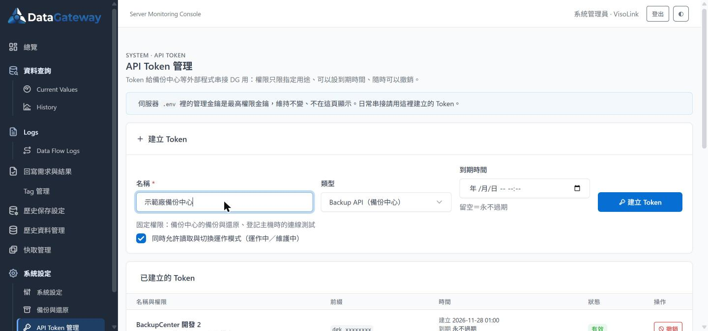
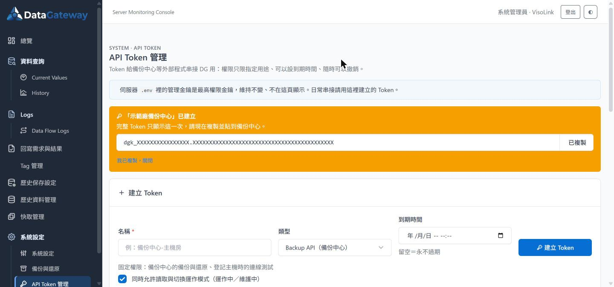
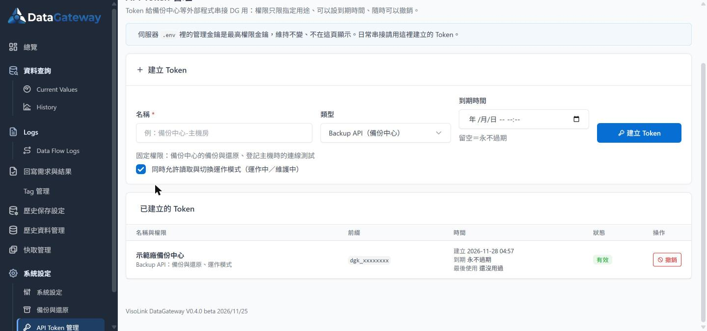

API Token 管理
在 DG 畫面建立給備份中心等外部程式用的 Backup API Token：權限只限備份用途、可設到期、可撤銷。伺服器上的管理金鑰維持不變、不在畫面顯示，日常串接一律用這裡建立的 Token。
建立 Backup API Token

- 名稱
- 必填，最多 200 字；用來辨認是哪個程式在用，例如「備份中心-主機房」。
- 類型
- 「Backup API（備份中心）」。
- 到期時間
- 留空＝永不過期；設定時必須在現在之後。
- 固定權限
- 備份中心的備份與還原、登記主機時的連線測試。其他管理功能一律不開放。
- 同時允許讀取與切換運作模式
- 預設勾選。備份中心還原時要把 DG 切到維護中，給備份中心用的 Token 請保持勾選。
- 開啟「系統設定 › API Token 管理」。
- 在「名稱」輸入用途，例如「示範廠備份中心」。
- 需要到期時設定「到期時間」，不設就留空。
- 確認「同時允許讀取與切換運作模式（運作中／維護中）」已勾選。
- 按「建立 Token」。
頁面上方出現「「名稱」已建立」的黃色區塊，顯示完整 Token（下一節），下方「已建立的 Token」清單多一筆，狀態「有效」。
失敗時先查
- 名稱欄變紅「請輸入名稱」：名稱是必填。
- 「到期時間必須在現在之後」：改成未來的時間，或留空表示不過期。
- 出現「建立失敗」：目前登入的帳號不是 DG 管理員。
複製只顯示一次的 Token，貼到備份中心

dgk_ 開頭，只顯示這一次（圖中已遮蔽）。- 按欄位右邊的「複製」，按鈕變成「已複製」。
- 到備份中心「受管主機」新增或編輯這台 DG，把 Token 貼到「Backup API Token」欄（備份中心手冊 9.2）。
- 確認備份中心測試連線正常後，回到 DG 按「我已複製，關閉」。
備份中心顯示「正常 已連上 DataGateway …」；DG 清單中這筆 Token 的「最後使用」開始顯示時間。
完整 Token 只顯示這一次，DG 只保存前綴與驗證資料，之後無法再查看。忘了複製或遺失時，建立一個新的 Token，再撤銷舊的。不要把 Token 寫在文件、郵件或聊天訊息裡。
失敗時先查
- 按「複製」沒有變成「已複製」：瀏覽器不允許寫入剪貼簿，改用滑鼠選取欄位全文複製。
- 備份中心顯示「憑證錯誤」：貼上的內容不完整，或 Token 已撤銷、已過期。
查看已建立的 Token 與到期提醒

- 名稱與權限
- 名稱，以及「Backup API：備份與還原、運作模式」等權限。
- 前綴
- Token 開頭的一段，用來核對備份中心用的是哪一把。
- 時間
- 建立、到期（永不過期或日期）、最後使用（還沒用過或時間）。
- 狀態
- 有效、已撤銷、已過期。
- 看「最後使用」確認備份中心有在用這把 Token。
- 到「總覽」看提醒：沒有任何有效 Token 時顯示「尚未建立 API Token，備份中心無法用 Token 連線。」；有 Token 將在 7 天內到期時顯示「N 個 API Token 將在 7 天內到期。」，按「前往 API Token 管理」處理。
知道每把 Token 是否有效、何時到期、最近有沒有被使用。
DG 的設定備份（第 12 章與備份中心）包含「API Token」資料類型，只存前綴與雜湊、不含 Token 本身；還原後原本的 Token 可以繼續使用。
失敗時先查
- Token 快到期：先建立新的 Token 貼到備份中心，確認正常後再撤銷舊的。
- 「讀不到 Token 清單」：確認目前帳號是 DG 管理員、DG 服務正常。
撤銷 Token
- 先確認用這把 Token 的程式已換成新的 Token（例如備份中心已更新）。
- 在該列按「撤銷」。
- 確認視窗「撤銷這個 Token？」按「撤銷」。
狀態變成「已撤銷」，「撤銷」按鈕消失；備份中心該主機的連線變成「憑證錯誤」，直到換上新 Token。
撤銷不能復原。伺服器上的管理金鑰不受影響，也不會在這頁顯示。
失敗時先查
- 撤銷後備份中心排程失敗：到備份中心「受管主機」編輯這台 DG，貼上新的 Token。